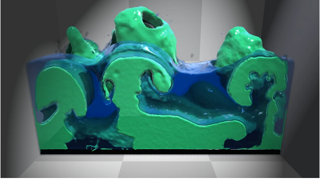
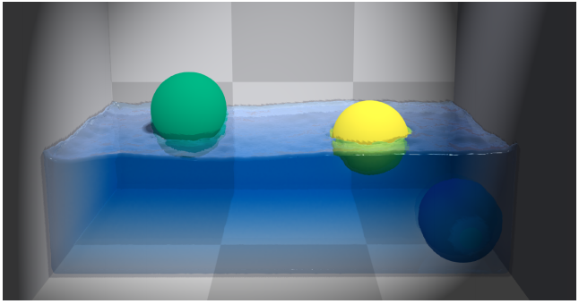

The goal for this project is to create a real-time fluid simulator that can handle interactions of multiple liquids as well as interactions of matter in different states. Such simulations are very highly demanded in video games for generating realistic environmental effects that respond to user interaction. They also have applicability to scientific studies of fluid interaction.
Such simulators are difficult to create due to the computational complexity involved in the simulating fluid physics. Generally, such simulators are either physically inaccurate or cannot be rendered in real-time. Furthermore, objects of different states or densities are usually simulated with different models, rendering it difficult to calculate the interactions between the two objects.
This project will solve the aforementioned problems by following the methods proposed in the paper “Unified Particle Physics for Real-Time Applications”, cited below. The paper proposes creating a particle simulator for all types of matter, no matter the state or the density, and simulating interactions between the particles to create realistic interactions between objects. Fluids of different densities simply have different sets of constraints between their particles. In addition, corrective factors are added for solid matter to ensure that solid objects retain their shapes. By making all objects in the scene out of the same particles, the engine is able to seamlessly and efficiently simulate interactions in the environment.
The main goal behind this project is to show how two fluids with different densities would interact. More specifically, it is to closely simulate the Rayleigh-Taylor instability. The primary fluids being used are water and oil. These simulations will happen with earth’s gravitational field. The interaction of the fluids in will be simulated using the position-based fluids method [Macklin and Muller 2013]. The final result would look similar to the picture below.
On achieving this goal, the gravitational force will be varied to demonstrate how the different fluids would interact on planets of different masses. For example, a scene could be rendered showing the interaction in the moon’s gravitational field.
Afterwards, support for interaction between fluids and solid objects would be implemented. The densities of the solid objects would be varied, allowing for a demonstration of buoyancy forces, creating an interaction similar to the picture below.
Understand research papers and finalize mathematical model for the project.
Design framework for the project.
Learn how to use OpenGL
Write up class and method definitions in C++
Start implementing constraint solvers and update functions for particles
Get rendering working with particles represented as spheres
Render basic single fluid simulations for midpoint
Finish particle simulator physics
Get rendering working with liquid appearance
Render some simple single and double fluid simulations for testing
Render demos for final write-up
Implement GUI
Implement reach goals
OpenGL: https://www.opengl.org/
Macklin, Miles, and Matthias Müller. "Position based fluids." ACM Transactions on Graphics (TOG) 32.4 (2013): 104.
Macklin, Miles, et al. "Unified particle physics for real-time applications." ACM Transactions on Graphics (TOG) 33.4 (2014): 153.
Akinci, Nadir, et al. "Versatile rigid-fluid coupling for incompressible SPH." ACM Transactions on Graphics (TOG) 31.4 (2012): 62.